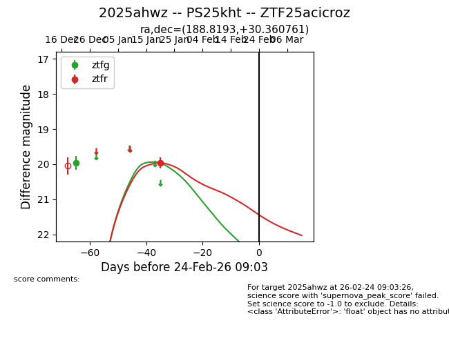
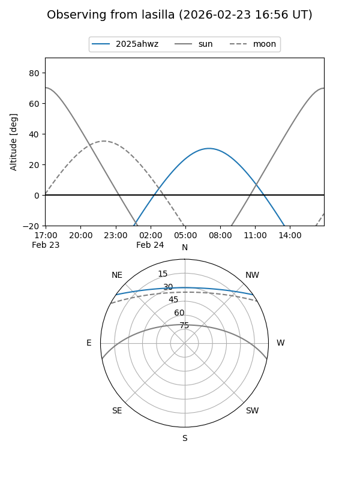
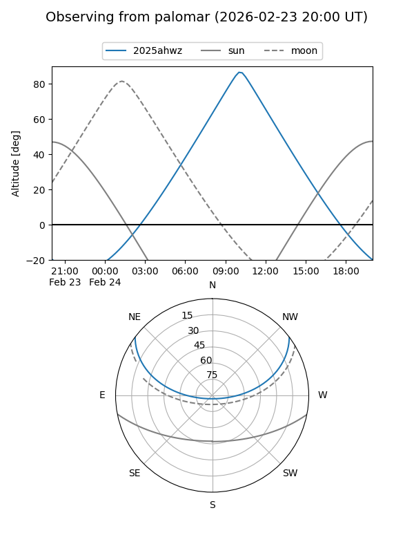

2025ahwz
Target 2025ahwz at 2025-12-30 05:26
Aliases and brokers:
FINK: fink-portal.org/ZTF25acicroz
Lasair: lasair-ztf.lsst.ac.uk/objects/ZTF25acicroz
ALeRCE: alerce.online/object/ZTF25acicroz
TNS: wis-tns.org/object/2025ahwz
YSE: ziggy.ucolick.org/yse/transient_detail/2025ahwz
alt names
ZTF25acicroz (ztf,fink_ztf)
2025ahwz (tns,yse)
PS25kht (panstarrs)
Coordinates:
equatorial (ra, dec) = 188.8193,+30.36076
equatorial (HMS+DMS) = 12:35:16.63,+30:21:38.74
galactic (l, b) = (169.5938,+85.20524)
Flags:
Photometry:
last ztfg=19.96
1 ztfg detections
Lightcurve

Visibility


Additional plots